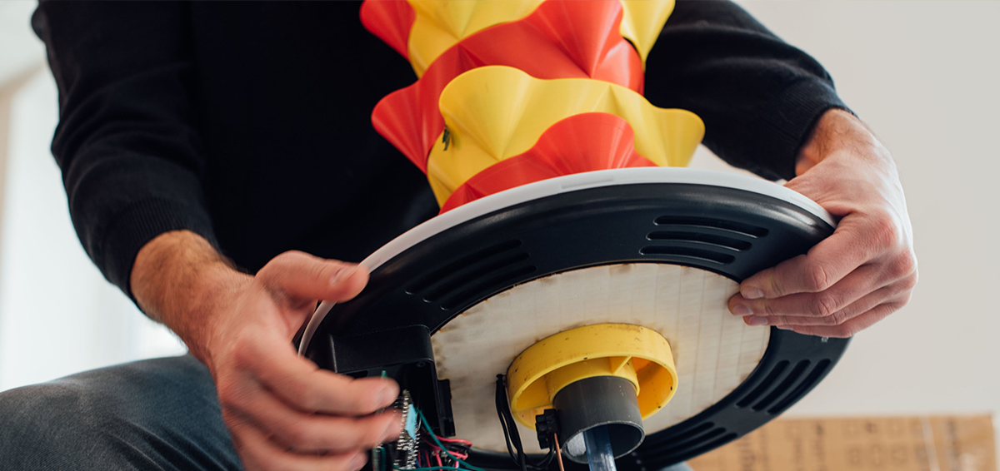

makers' pot
Makers' pot est un objet pédagogue. Sa fonction première est de faire apprendre. Il a été conçu pour le makers' bootcamp #5 qui explorait la thématique de l'agriculture urbaine Ce bootcamp a permis à 40 participants d'apprendre #arduino, la modélisation 3D et #HTML #CSS #JS en fabricant 10 potagers connectés!
Pour voir la vidéo du makers' bootcamp c'est par ici.
Pour apprendre à fabriquer un makers' pot c'est par là.
Makers' pot est un objet pédagogue. Sa fonction première est de faire apprendre. Il a été conçu pour le makers' bootcamp #5 qui explorait la thématique de l'agriculture urbaine Ce bootcamp a permis à 40 participants d'apprendre #arduino, la modélisation 3D et #HTML #CSS #JS en fabricant 10 potagers connectés!
Pour voir la vidéo du makers' bootcamp c'est par ici.
Pour apprendre à fabriquer un makers' pot c'est par là.